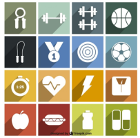
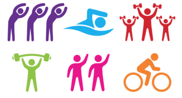

Assignment 2 Solution: PlayGymWeb

A detailed walkthtough of the Solution to the PlayGymWeb assignment
ICTSkills Assignment : PlayGymWebJS

Specification of the Assignment for the ICT Skills Module